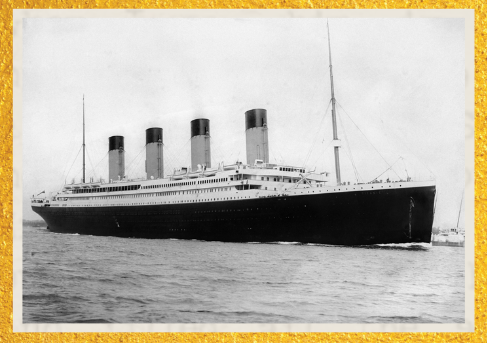

RMS Titanic – A Força do Vapor
O Titanic foi um dos maiores e mais avançados navios do início do século XX, movido por potentes máquinas a
vapor. Equipado com três hélices e impulsionado por enormes caldeiras e turbinas, o navio simbolizava o auge
da tecnologia a vapor para transporte marítimo. Partiu em 10 de abril de 1912 rumo a Nova York, mas
naufragou após colidir com um iceberg, no que se tornou um dos maiores desastres da história naval.